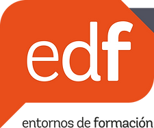
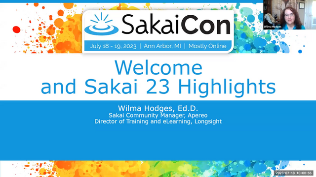

SPONSORS

Did you miss this year's SakaiCon?
Check out the playlist on YouTube for session recordings!
SakaiCon 2023

SakaiCon23 Welcome and Sakai 23 Highlights
20:33
SakaiCon23 The Plan Unidigital: Sakai Innovations from Spanish Universities
32:09
SakaiCon23 Sakai Great Teaching Showcase
56:07
SakaiCon23 Sakai Lessons: Julianne's 7 Favorite Things
30:13
SakaiCon23 Found in Translation: Empowering Multilingualism in Sakai
32:51
SakaiCon23 Grading outside the box: Creative approaches to assessment in Sakai
33:07
SakaiCon23 Groupies Unite: Group Awareness and Collaboration in Sakai
32:33
Last Year's Sakai Virtual Conference
Did you miss Sakai Virtual Conference 2022?
Want to revisit some of the sessions?
Catch up with some video highlights!
SakaiCon22
Welcome and General Session: Conversations
41:55
General Session: Sakai Assignments
31:32
Showcase: Effective Teaching Practices in Sakai
01:02:25
General Session: Sakai Rubrics
30:01
Welcome and General Session: Sakai Lessons
41:40
General Session: Accessibility in Sakai
32:24
Showcase: New and Upcoming Features in Sakai
39:04
General Session: Sakai Tests & Quizzes
36:58